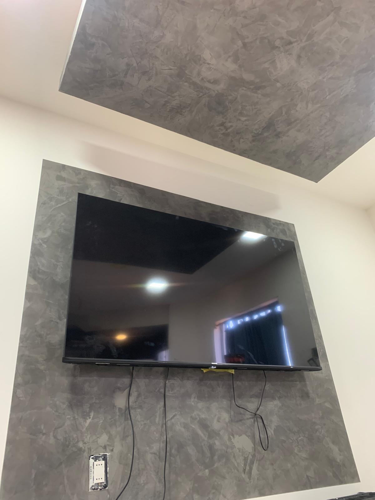
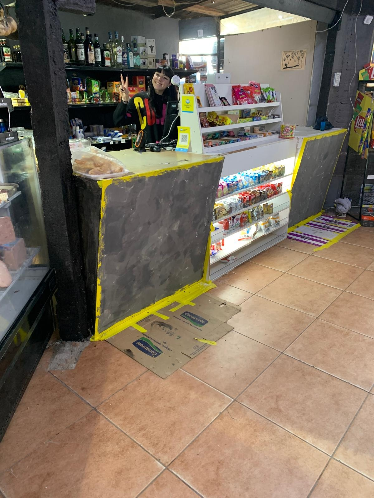
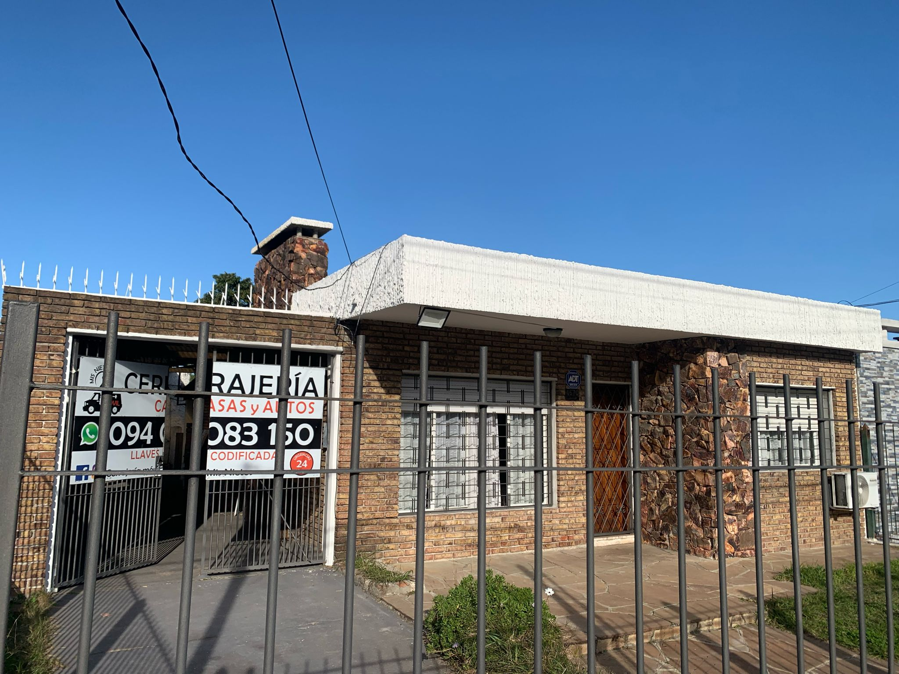
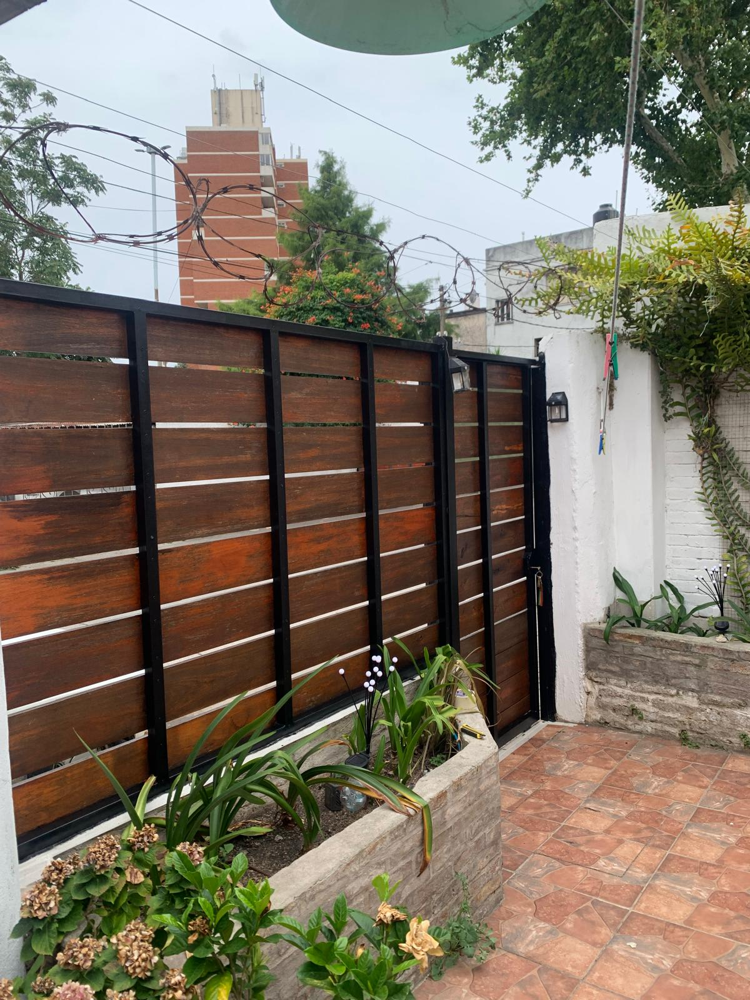

Estuco veneciano y acabados premium para tu hogar o negocio. Calidad exclusiva garantizada.
Solicita tu cotización gratuitaConoce algunos de nuestros trabajos realizados con la más alta calidad

"Resultado impresionante! El estuco transformó completamente nuestra sala."
- Omar Avila, Autodromo del Pinar

"El estuco le dio un toque de lujo único a nuestro negocio. Recomendados 100%."
- Carlos Rodríguez, La Blanqueada

"Trabajo impecable y terminado en tiempo. Nuestra casa se ve espectacular."
- Ana Martínez, Maroñas

"Atención al detalle increíble. El porton de la casa se ve como se veía hace 15 años."
- Luis Fernández, Maroñas
Estamos listos para transformar tu espacio